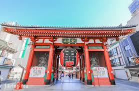

日本東京之旅
第一天 淺草寺-感受傳統文化的魅力。

我們一早抵達東京，先到淺草寺參觀。
淺草寺是東京最古老、最有名的寺廟之一，充滿濃厚的傳統氛圍。
在仲見世商店街，我們品嚐了日式糯米團子和人形燒，還買了紀念品。
傍晚時分，沿著隅田川散步，欣賞晴空塔在夕陽下的美景。
第二天 秋葉原-現代科技的展現。

早餐後我們前往秋葉原，這裡是電器與動漫愛好者的天堂。
街道兩旁有各式電子產品商店、模型店和二手遊戲店。
我們還進了一家主題咖啡廳，店員穿著動漫角色服裝，非常有趣。
下午逛到腳酸，回飯店前還在便利商店買了各種限定口味零食。
第三天最 東京塔

今天的行程是參觀東京塔。
白天的東京塔氣勢宏偉，但我們選擇晚上前往，欣賞它的夜間燈光。
從觀景台往下看，整個東京的夜景一覽無遺，燈火閃爍，十分浪漫。
結束行程後，我們搭乘電車返回機場，結束了愉快的東京之旅。
旅遊花費表
| 項目 | 金額(日圓) | 備註 | 交通費 | 5000 | 包含地鐵與電車 |
| 餐飲費 | 8000 | 三天餐費 |
| 門票 | 3000 | 淺草寺免費，東京塔門票 |
| 購物 | 6000 | 紀念品與零食 |
| 總計 | 22000 | 約合新台幣5000元 |